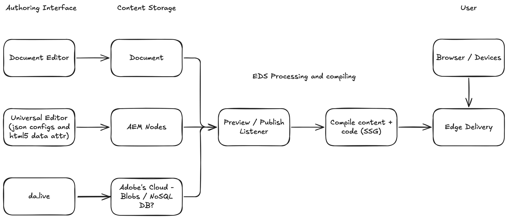

First published as a LinkedIn video on July 13, 2025. Rewritten for this site in October 2026 from the post and the diagram I drew for it.
What changed since July 2025
- Adobe's developer tutorial on aem.live now uses Document Authoring, the editor at da.live, as the content source "to get you to a live website as fast as possible." It notes that the Universal Editor can be configured for the same project.
- The Document Authoring documentation that used to live on its own site, docs.da.live, has been consolidated into the aem.live documentation.
- In October 2025 I built on da.live: I wrote an MCP server for da.live, then tested it across AI platforms.
1. Offering 1: documents in Google Docs or Word
The first offering is the one Edge Delivery Services started with. Authors write in a document editor, Google Docs or Microsoft Word, and the document is the content. Edge Delivery supports Google Drive and Microsoft SharePoint as content sources for these documents.
In June 2025 I put it this way: docs are intuitive, and Google Docs or Word already feel like home. The idea that those surfaces can power live websites is no longer science fiction. It's architecture.
2. Offering 2: AEM with the Universal Editor
The second offering came later, with the same concept. Authors work in AEM through the Universal Editor, and the content is stored where AEM content has always been stored, as AEM nodes. On my diagram I noted what drives the editor: JSON configs and HTML5 data attributes in the page.
3. Offering 3: da.live, the new one
In July 2025 Adobe had just added a third supported authoring capability for Edge Delivery Services: da.live, in early access at the time. Authors write in da.live, in the browser, and the content is stored in Adobe's cloud.
How exactly Adobe stores it, I didn't know. On the diagram I wrote "Blobs / NoSQL DB?", question mark included. That was my guess, and I've left it as a guess.
With da.live, the seven AEM capabilities I'd written about in June 2025 should be eight now.
4. What the three have in common
This is how it all works, to me. The three offerings differ only on the left side of the diagram: the authoring interface and where the content is stored. From preview and publish onward, everything is shared. A preview or publish listener picks up the change, Edge Delivery compiles the content together with the code ahead of time, like a static site generator, and the result is served from the edge to browsers and devices.

- Author. Documents: In a document editor: Google Docs or Microsoft Word. Universal Editor: In AEM, through the Universal Editor, driven by JSON configs and HTML5 data attributes. da.live: In da.live, in the browser.
- Store. Documents: As a document. Universal Editor: As AEM nodes. da.live: In Adobe's cloud. I guessed blobs or a NoSQL database.
- Preview or publish. One listener picks up the change, whichever editor it came from.
- Compile. Content and code are compiled together ahead of time, like a static site generator (SSG).
- Deliver. Edge Delivery serves the result to browsers and devices.

Read that way, choosing an offering means choosing an authoring interface and a place for the content to live. The delivery side is drawn only once.
5. My opinions at the time
These are the opinions I'd already put in writing a month earlier, in Making sense of seven AEM capabilities:
- Document-based authoring in Edge Delivery is fast, scalable and predictable. It doesn't support personalization or omnichannel out of the box, but it offers the lowest friction for publishing.
- Docs-based authoring will scale faster than any other model. The authoring experience is streamlined enough that content teams can scale without deep AEM development effort.
- Most developers underestimate the effort to fully enable the Universal Editor. It's not just a toggle. It's a shift in the dev workflow.
For how Edge Delivery compares with the rest of the modern web, outside Adobe, see How Adobe EDS stacks up against the modern web.